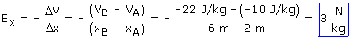
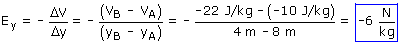
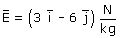

El campo medio mide como cambia el potencial al cambiar la posición

La componente horizontal del campo apunta hacia la derecha porque al ir hacia la derecha (Desde A hasta B) disminuye el potencial

La componente vertical del campo apunta hacia abajo porque al ir hacia abajo (Desde A hasta B) disminuye el potencial

|
|
El campo gravitatorio apunta siempre hacia los potenciales
decrecientes y sus componentes miden como cambia el potencial con
las distancias recorridas según la dirección de los
ejes. |